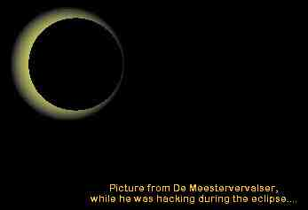

Eclipse '99
Hacked by De Meestervervalser

The sun is gone....
We all can explain it, but it still looks like a mystery.
This page was hacked.
Some can explain it, but it still looks like a mystery.
Why was it hacked ?
Why wasn't there any good security ?
Why are some administrators pissed if they are hacked ?
If people see an eclipse they remember where they are:
on just one small planet in a big universe.
For a while they feel how small they are, 'cause they can't
control the universe.
If people see a hack they also should remember where they are:
In a digital world, where personal data is stored on servers,
connected by phonelines and cables.
For a while they feel how small they are, because they can't
control cyberspace.
No, we will never be able to control the universe,
But we can control cyberspace.
The universe was created by the nature,
and the nature still controls the cyberspace
The Internet was created by hackers,
and hackers still control the Internet.
All 'good' governments want to improve the earth.
All 'good' hackers want to improve the Internet.
Why are hacker hunted down by governments while they want the
same thing, in a different place ?
Because they don't know cyberspace.
They don't understand it, and they see the people who control it
as intruders in their own world.
They don't want to see that cyberspace was created to make life
easier for us all, and that it belongs to us all.
They let people try to 'own' a part of cyberspace,
while they are not capable enough to do it.
All what hackers want to do is to help them improving their
knowledge,
By showing them what they did wrong.
They are the intruders in cyberspace, but do hackers hunt them
down ?
No, hackers are helping them to do what they want to do.
They are helping by hacking their systems, their part of the
Internet.
A hack is an eclipse in cyberspace.
Respect goes out to all the hackers who are fighting for this.
Let's go on, let's keep on fighting.
Let's create eclipses till all the people know where they are.
Let's go on till cyberspace is the moest secure place in the
world.
Today we live on earth, today we live in cyberspace.
De Meestervervalser
Greetz go out to:
Xoloth1
Acos & Dutchthreat
'Ray Panoramix'
Slack Packet & the stonehenge crew
V00D00
Bas & Aad
Attrition
Some at HIT2000
Astral & 403-security
No data was deleted during this hack !
Admin : Mail me for more info & about how to secure your
system:
meestervervalser@hotmail.com